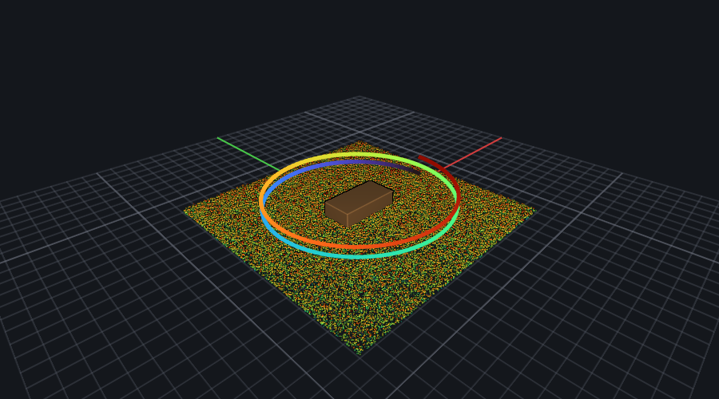
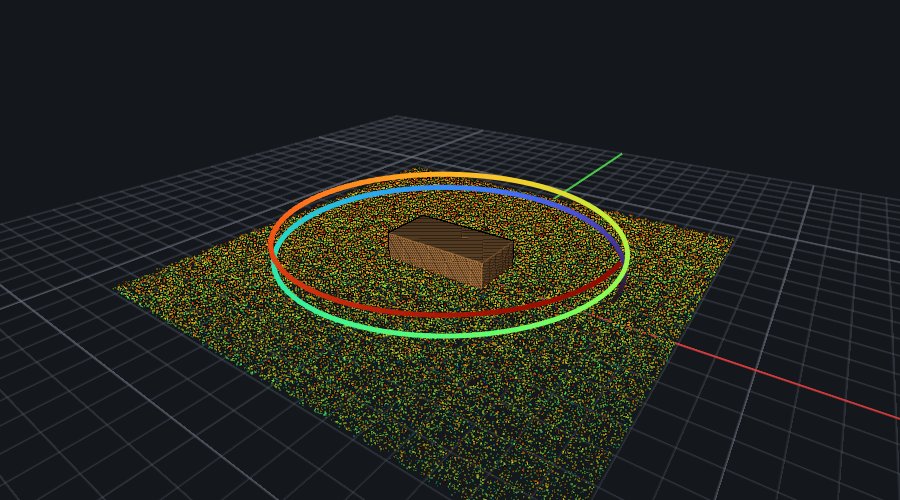
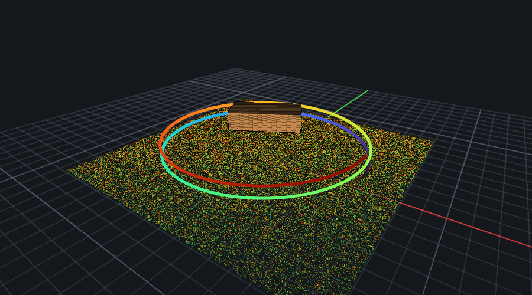

Getting started
This tutorial builds a small scene with the three basic kinds of layer (a mesh, a point cloud and a line) and renders it to an image. Every code block on this page runs when the documentation is built; the images are its output.
Installation
using Pkg
Pkg.add("SpatialRender")A scene
A Scene holds layers that share one coordinate frame. Coordinates are metres, with Z up.
using SpatialRender
scene = Scene()A mesh
Meshes are usually loaded from STL or OBJ files with load_mesh. Here we build a small box directly so the tutorial needs no files. A TriMesh is a vertex list plus triangle indices (three 0-based indices per triangle).
corners = [Vec3f(x, y, z) for z in (0, 1) for y in (-1, 1) for x in (-2, 2)]
faces = [(1, 2, 4), (1, 4, 3), (5, 7, 8), (5, 8, 6), (1, 5, 6), (1, 6, 2),
(3, 4, 8), (3, 8, 7), (1, 3, 7), (1, 7, 5), (2, 6, 8), (2, 8, 4)]
vertices = MeshVertex[]
indices = UInt32[]
for f in faces, k in f
push!(vertices, MeshVertex(corners[k], Vec3f(0, 0, 1)))
push!(indices, length(vertices) - 1)
end
box = TriMesh(vertices, indices; name = "box", color = Vec4f(0.8, 0.55, 0.3, 1))
compute_normals!(box) # proper normals for lighting
add!(scene, box)TriMesh "box" (12 triangles)A point cloud
A PointCloud can be made from a vector of points, with optional intensity, colour and classification per point. Real data usually comes from LAS files (see the point cloud tutorial).
using Random
rng = Xoshiro(1)
ground = [Vec3f(16rand(rng) - 8, 16rand(rng) - 8, 0.05randn(rng)) for _ in 1:60_000]
add!(scene, PointCloud(ground; intensity = rand(rng, length(ground)), name = "ground"))PointCloud "ground" (60000 points)A trajectory
trajectory turns a sequence of positions into a line layer, coloured from blue (start) to red (end) so the direction of travel is visible.
path = [Vec3d(6cos(t), 6sin(t), 0.5 + 0.1t) for t in range(0, 4π, length = 200)]
add!(scene, trajectory(path; width = 4, name = "path"))
sceneScene with 3 layers (frame: IdentityFrame)
TriMesh box 12 triangles
PointCloud ground 60000 points
LineLayer path 199 polylines
Rendering an image
snapshot renders without opening a window and returns an image, which notebooks (Jupyter, VS Code, Pluto) and these pages display directly. With no camera given, it frames the whole scene from the south-west.
snapshot(scene; width = 900, height = 500)
The first scene
To save a file instead, use screenshot("scene.png", scene), or write_png("scene.png", snapshot(scene).pixels).
For a chosen viewpoint, pass a Camera:
camera = Camera(position = Vec3d(10, -14, 9), target = Vec3d(0, 0, 0.5))
snapshot(scene; width = 900, height = 500, camera)
The same scene from another viewpoint
The interactive viewer
On a machine with a display, open_viewer shows the scene in a window:
open_viewer(scene)Drag with the left mouse button to orbit, the right button to pan, and scroll to zoom; press H in the window for all controls. Useful keys to try first: 1–5 change the point colouring, M toggles the mesh wireframe, R enters measure mode (click two points), and F frames the whole scene.
Changing the scene
Layers can be changed after they are added. Moving a layer is cheap: it only changes its pose, not its data.
set_pose!(box, Vec3d(0, 0, 2), Quat(Vec3d(0, 0, 1), π / 6)) # lift and turn the box
snapshot(scene; width = 900, height = 500, camera)
The box moved by its pose
After editing a layer's vertices in place, call touch! so the next frame uploads the new data.
Next: Point clouds.